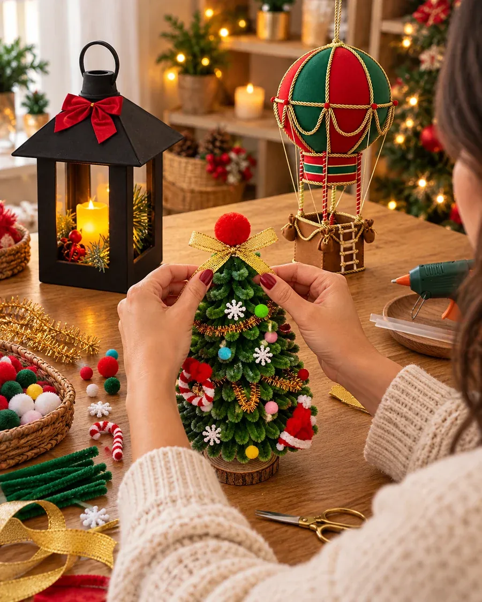
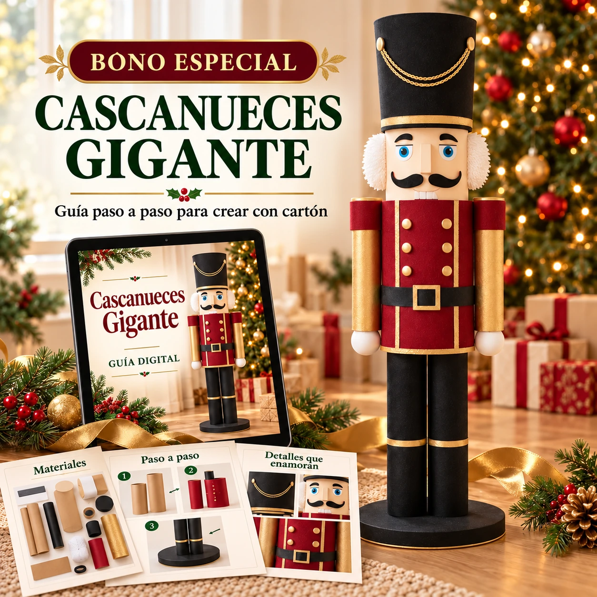
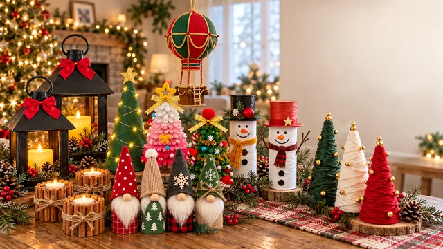
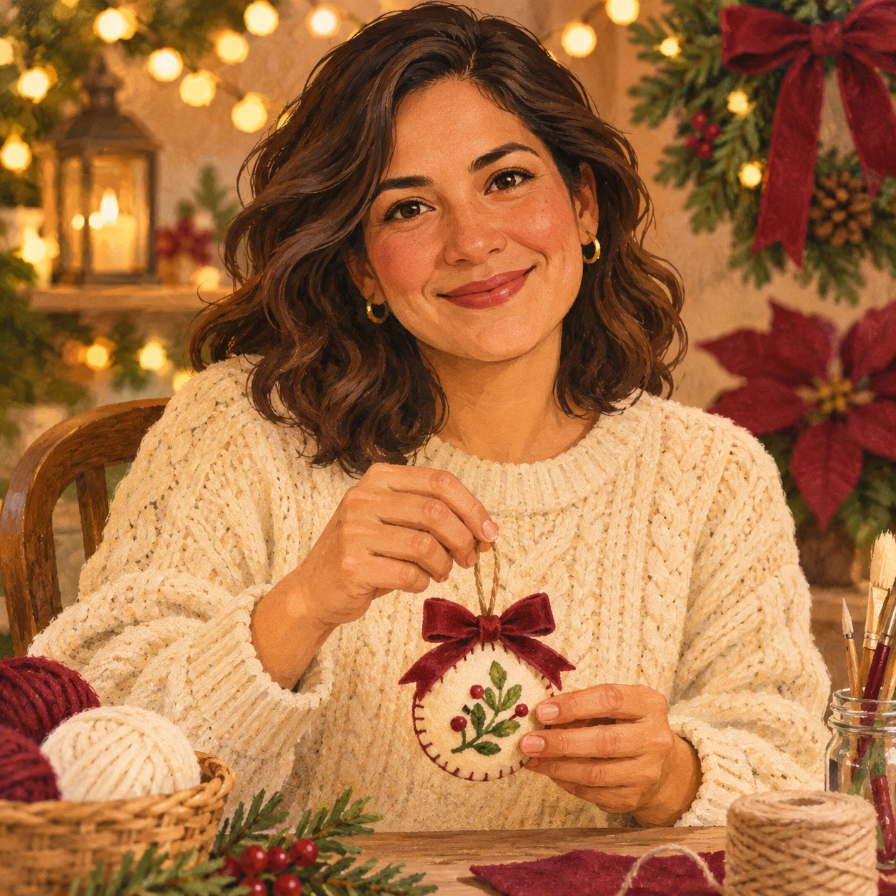

A
Alumna de la edición brasileñaEdición brasileña · Extracto traducido
Al principio pensé que sería difícil, pero con la guía pude hacerlo sin problemas. 💗✓✓

Descubre lo que puedes crearÁrboles, gnomos, casitas, coronas y muchos detalles más. Transforma materiales cotidianos en una Navidad hecha con tus propias manos.
SÍ, QUIERO LOS 50 PROYECTOSAl principio pensé que sería difícil, pero con la guía pude hacerlo sin problemas. 💗✓✓
Elegí el proyecto más difícil, pero al final lo logré. El resultado fue muy bueno. 💗✓✓
Extractos en español de testimonios publicados en la página brasileña de referencia.
Una lista de materiales y una ruta visual para cada creación.
Sencillos, bonitos y hechos por tiExplora los detalles. Toca una imagen para verla más grande.
Árboles, coronas, personajes y detalles para una decoración llena de personalidad.
Encuentra ideas para trabajar con papel, cartón, fieltro y otros materiales accesibles.
Prepara piezas para la puerta, la mesa y ese rincón que quieres volver especial.
De la lista de materiales al acabado: avanza con instrucciones visuales.
Convierte lo que creas en un detalle personal para tu familia y tus amistades.
GUÍA DIGITAL · PASO A PASO

Dale una nueva forma al cartón y a los tubos con una pieza decorativa para tu rincón navideño.
INCLUIDO EN EL KIT COMPLETOTestimonios de la edición brasileña, traducidos al español.
Las explicaciones son muy fáciles de entender. 😍✓✓
Hice todo en casa, gasté muy poquito y el resultado quedó hermoso. 🥹✓✓
Pude hacerlo incluso sin tener mucha experiencia. La explicación es muy clara. 😁✓✓
Está todo organizado en un solo lugar, con la lista de materiales y explicaciones fáciles.✓✓
Lo hice con mi hijo el fin de semana. Le encantó participar. 💚✓✓
Fuente: Natal Feito à Mão. Se conservan los nombres publicados; son extractos traducidos y no resultados verificados de esta edición LATAM.
Empieza con 20 proyectos o llévate la colección de 50 con los cinco bonos.
Navidad entre Manos 2026 · 50 proyectos + 5 bonos

Pago único · Sin suscripción
Navidad entre Manos 2026 · 20 proyectos para comenzar
SIN BONOS ADICIONALESPago único · Sin suscripción

Una mesa, algunos materiales y las ganas de intentarlo: ahí puede empezar algo bonito. Que cada proyecto se convierta en un momento para disfrutar y en un detalle que quieras compartir.
Una Navidad con tu propio sello. ♡
Si no cumple tus expectativas, solicita un reembolso dentro de los 7 días posteriores a la compra.
No necesitas experiencia previa. Elige uno de los proyectos sencillos y sigue la lista de materiales y las instrucciones visuales.
Se utilizan materiales habituales de papelerías y tiendas de manualidades. Según tu país, la goma EVA puede llamarse foamy o fomi, y los limpiapipas, alambre de chenilla.
El kit completo incluye las plantillas necesarias para los proyectos que las requieran y un bono de plantillas para imprimir.
No. Puedes consultar las guías desde una pantalla e imprimir solo las plantillas que vayas a utilizar.
Sí. Los archivos PDF se pueden consultar desde celular, tableta o computadora.
El acceso se envía al correo electrónico que utilices en la compra, una vez confirmado el pago.
Puedes descargar y conservar el material para consultarlo a tu ritmo, sin suscripción.
Tienes 7 días después de la compra para solicitar un reembolso si el material no cumple tus expectativas, a través del canal de atención indicado en tu comprobante de compra.